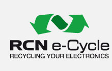

Be smart
Ewaste is the fastest growing waste stream in developed countries. It is made up of electronic equipment that has come to the end of its useful life and is destined for disposal. It includes for example:Batteries, televisions, computers, cell phones, photocopiers, stereos, DVD or VCR players and cameras
Computer waste is dismantled by Cargill Enterprises, 199 Hillside Rd, South Dunedin. Computer waste can also be dropped off there during business hours. For more information about their ewaste recycling process, contact Derek King, General Manager of Cargill Enterprises on derek@cargillenterprises.co.nz
TV waste is sent to RCN in Christchurch for recycling. Visit www.rcn.co.nz/ewaste in the related information section below, for more information.
RCN e-Cycle locates your drop off depot (Google.com)